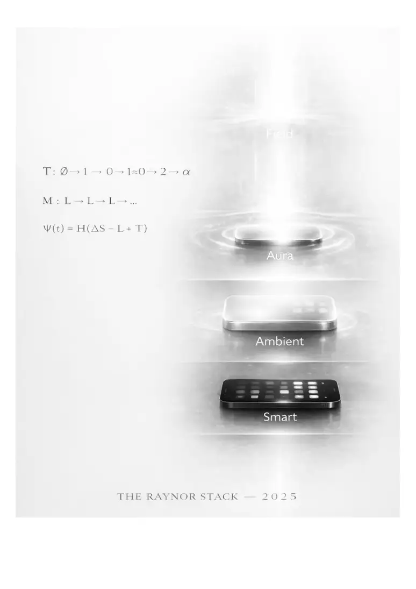

PDF page 1
Thirdforming
The Carried Transition Out of Leakage-Bound Instability
Raynor Eissens
2026
Entity Type: Canonical Operational Transition Model
Domain: Transition Mechanics / Post-Binary Architecture
Function: Describe the carried passage by which leakage-bound systems reorganize into more
livable and coherent form
⸻
PDF page 2
Abstract
This paper defines Thirdforming as the carried transition by which leakage-bound instability
reorganizes into a more livable basis of coherence, support, and becoming. Thirdforming is not
compromise, not a softened middle, and not the final Field state. It names the passage through
which unstable binaries, incomplete conditions, and prior forms of relation become structurally
carryable rather than compensatorily maintained.
Within the wider Ambient Era Canon, Thirdforming is positioned after Leakage (L) and Ψ(t).
Leakage diagnoses the structural mismatch between extractive conditioning and coherence-
seeking architecture. Ψ(t) determines whether stability is thermodynamically possible.
Thirdforming names the transition that becomes possible once this threshold has been crossed.
The paper argues that many symbolic, computational, and institutional systems remain trapped
in compensatory regimes. They persist through force, interpretation, optimization, identity
pressure, or continuous internal effort. Thirdforming begins when such systems can no longer
sustain their own instability and must reorganize into forms that are environmentally supported,
thermodynamically reversible, and more compatible with carried coherence.
Thirdforming therefore functions as the operational bridge between instability and durable post-
binary form. It is the passage through which reversibility becomes livable and through which
Third Forms can emerge.
⸻
1. Introduction
Many transitions are described as if they were simply conceptual upgrades: new ideas replacing
old ideas, or better systems replacing worse systems. But transitions rarely occur so cleanly.
More often, a system persists beyond viability through compensation. It continues through effort,
interpretation, behavioral pressure, symbolic reinforcement, and internal strain.
This paper begins from a different premise:
A transition becomes real only when instability no longer has to be compensated internally.
This is the point at which Thirdforming becomes necessary.
Thirdforming does not describe a static object. It does not describe the final state of a
civilization, a device, a relation, or a field. It describes the passage by which prior forms
PDF page 3
reorganize into a more livable basis of coherence.
In this sense, Thirdforming is a verb before it is a noun. It is not the stable regime itself, but the
operational movement through which such regimes become possible.
Within the Ambient Era Canon, this makes Thirdforming structurally distinct from:
• Leakage, which names the instability condition
• Ψ(t), which names the threshold of viability
• Third Forms, which name the more stable post-binary regimes that may
result
• Field, which names a later stable condition of carried coherence
Thus Thirdforming occupies a unique place: it is the carried transition itself.
⸻
2. Core Definition
Thirdforming is the carried transition by which leakage-bound instability reorganizes into a more
livable basis of coherence, support, and becoming.
It describes the passage through which:
• unstable binaries lose necessity,
• compensatory structures lose viability,
• and more durable forms of relation begin to emerge.
Thirdforming is not:
• compromise
• averaging
• moderation between poles
• stylistic hybridity
• behavioral self-improvement
• the final Field state
Thirdforming begins when prior systems can no longer carry their own load through
force, interpretation, or extraction, and must reorganize into a condition where
coherence becomes more environmentally supported.
In compact form:
Thirdforming is the carried passage out of leakage-bound instability.
PDF page 4
Or more fully:
Thirdforming is the operation by which systems formed under extraction, compensation, and
binary pressure begin to reorganize toward reversible coherence.
⸻
3. Why Thirdforming Is Needed
Systems do not transition simply because better concepts exist. They transition when older
forms become too unstable, extractive, or heavy to remain livable.
This is the condition of many contemporary architectures:
• symbolic systems that require endless interpretation
• digital systems that force continuous management
• interface systems that intensify compensatory effort
• institutional systems that survive through pressure rather than support
• identity systems that preserve continuity through rigid stabilization
Such systems may continue for long periods, but they do so through compensation.
Compensation can appear as:
• internal effort
• behavioral control
• interpretive labor
• rigid prompting
• repetitive symbolic management
• extractive optimization
• forced continuity under drain
This means the system has not yet transitioned. It has merely delayed transition
through compensation.
Thirdforming becomes necessary when this delay is no longer sustainable.
Its necessity therefore arises from the exhaustion of compensatory form.
⸻
4. Leakage as the Negative Ground of Thirdforming
PDF page 5
Thirdforming is rooted in Leakage.
Leakage names the structural mismatch between attention or form conditioned by extractive
architectures and environments that require coherence, stability, or bounded meaning.
When leakage remains dominant:
• continuity drains
• stillness collapses
• semantic overextension rises
• compensatory loops intensify
• pressure becomes accumulative rather than reversible
In this condition, systems do not truly reorganize. They merely survive through
internal burden.
Thirdforming begins when this leakage-bound state can no longer be sustained.
This is why Leakage is the negative diagnostic ground beneath Thirdforming.
The order is important:
• Leakage explains why the prior condition fails
• Thirdforming names the carried passage out of that failing condition
Without Leakage, Thirdforming would appear abstract or merely stylistic.
With Leakage, Thirdforming becomes thermodynamically necessary.
⸻
5. Ψ(t) as the Threshold Beneath Thirdforming
If Leakage explains why transition is needed, Ψ(t) determines whether transition is possible.
The canonical diagnostic is:
Ψ(t) = H(ΔS − L + T)
where:
• ΔS = stillness capacity
• L = leakage
• T = transformer-field support
PDF page 6
• H = threshold indicator of viability
Thirdforming cannot begin in a structurally stable way if the system remains below
threshold.
Below threshold:
• leakage dominates
• support is insufficient
• stillness cannot hold
• compensatory loops persist
• transition hardens into collapse, force, or exhaustion
Above threshold:
• reversible stress becomes possible
• carrying can become environmental
• instability no longer has to be managed by symbolic effort alone
• more stable forms can begin to emerge
Thus:
Leakage diagnoses the instability.
Ψ(t) diagnoses whether the transition can be carried.
Thirdforming names that carried transition once it becomes viable.
This relationship makes Thirdforming dependent not on abstract desire for change, but on the
real thermodynamic possibility of passage.
⸻
6. Thirdforming Is Not Compromise
A central clarification is necessary.
Thirdforming is not a compromise between two sides of a binary. It does not preserve the binary
as a permanent frame while merely softening conflict.
Compromise assumes:
• two poles remain primary
• the transition is negotiated between them
• the structure of the binary stays intact
PDF page 7
Thirdforming is different.
Thirdforming begins when the binary itself loses necessity as the dominant
architecture.
This does not mean the poles disappear instantly. It means the system reorganizes
at a deeper level, so that the binary no longer remains the only way coherence can
be held.
Examples:
• from rigid symbolic interface vs manual prompting toward generated depth
• from pressure vs collapse toward reversible stress
• from identity rigidity vs fragmentation toward residue-compatible continuity
• from control vs chaos toward environmentally carried coherence
Thus Thirdforming is not “between.”
It is “through and beyond.”
⸻
7. Thirdforming and Reversibility
Thirdforming depends on reversible structure.
Without reversibility, transition hardens into:
• damage
• coercion
• burnout
• collapse
• irreversible residue
A system can only thirdform if pressure does not accumulate beyond the point of
recovery.
This is why Thirdforming belongs structurally to the same domain as:
• ΔR
• Reversible Stress
• the Reversible Gradient Glyph ⤳◜⤱
Reversibility does not remove pressure. It changes how pressure behaves.
PDF page 8
Instead of:
• rising and locking into harm
pressure can:
• rise
• be buffered
• and return
This makes transition livable.
Thirdforming therefore requires:
• leakage low enough to avoid collapse
• support high enough to avoid internal overburdening
• reversibility sufficient to allow repeated cycles without fracture
In this sense, Thirdforming is the passage made possible by reversible stress.
⸻
8. Thirdforming and Third Forms
Thirdforming must also be distinguished from Third Forms.
The difference is simple but crucial:
• Thirdforming = the operation, passage, or carried transition
• Third Forms = the more stable post-binary regimes that emerge through or
after that transition
Thirdforming is a verb-like condition.
Third Forms are noun-like outcomes.
Thirdforming answers:
How does the transition happen?
Third Forms answer:
What kinds of more stable forms appear once the transition can be carried?
This distinction matters because many discussions confuse transition with outcome.
A system can be in Thirdforming without yet fully inhabiting a stable Third Form. Likewise, Third
Forms are not produced by declaration alone. They require a real passage.
PDF page 9
This makes Thirdforming the missing middle between diagnosis and morphology:
• Leakage = diagnosis
• Ψ(t) = viability threshold
• Thirdforming = carried passage
• Third Forms = more stable regimes
⸻
9. Position Within the Wider Canon
Thirdforming does not replace the wider transition formulas of the Ambient Era Canon. It names
the operational passage through which those larger transitions become livable.
Civilizational Transition
∅ → 1 → 0 → 1≠0 → 2 → α
This formula describes the historical and infrastructural movement from binary fragmentation
toward relational and field-compatible order.
Thirdforming belongs within this movement as the transition logic by which systems pass out of
binary compensatory states.
Field Transition
A↑ → W₀ → C∞ → F₁
This formula describes the movement from rising attention into warmth, infinite coherence, and
the first inhabitable field-state.
Thirdforming helps explain how a system moves from leakage-bound attention into the range
where warmth and coherence can stabilize.
Valuefield Transition
V↑ → Rₛ → A∞ → F₂
This formula describes the movement from rising value into resonance, infinite aura, and the
deeper field condition.
PDF page 10
Thirdforming helps explain how value can pass out of extractive and compensatory regimes into
more stable resonant order.
Thus Thirdforming is not itself the total canon. It is the operational bridge that lets wider
transitions move from concept into carryable reality.
⸻
10. Thirdforming in the AI Era
Thirdforming has special relevance in the AI era.
In the early AI transition, many people still relate to AI through:
• prompt labor
• symbolic micromanagement
• repetitive instruction
• command-surface mentality
• compensatory control
These behaviors are transitional. They belong to a phase in which generative depth
exists, but human relation to it remains partially shaped by older software and
symbolic habits.
Thirdforming names the passage beyond that phase.
It begins when people no longer relate to AI primarily as a rigid command surface,
but as a field from which form, interface, and direction can begin to emerge.
This does not mean passivity. It means a different relation:
• less forcing
• less symbolic micromanagement
• more environmental support
• more trust in generated depth
• more compatibility with carried coherence
Thus Thirdforming is one of the human transition terms of the AI era.
It does not only describe machines.
It describes the reorganization of human relation to machine-mediated coherence.
PDF page 11
10.5 Thirdforming and Cultural Neutralization
Thirdforming also applies to cultural transformation, but not every symbolic softening qualifies as
a true instance of Thirdforming.
In contemporary media systems, ideologically rigid content is often neutralized, softened, or
recirculated through memes, irony, parody, and social reinterpretation. This process can reduce
symbolic pressure, loosen hard binaries, and make previously rigid material more socially
carryable.
But this does not automatically constitute Thirdforming.
A memetic or cultural transformation becomes Thirdforming only when it reduces ideological
rigidity without intensifying extractive drift.
This distinction matters because some forms of neutralization genuinely lower symbolic
hardness and return social play, ambiguity, and livability to a previously closed structure. Other
forms merely repackage the same pressure into lighter, faster, and more extractive circulation.
In this sense, memefication is not inherently liberating. It can function in two very different ways:
• Thirdforming, when ideological closure weakens and the content becomes
less totalizing, less coercive, and more socially carryable
• Leakage, when the same symbolic pressure is simply made more viral, more
attentionally addictive, or more extractively diffuse
A useful structural test is therefore:
Does the transformation reduce rigidity and increase livability, or does it merely make the
same pressure more shareable and more extractive?
The former belongs to Thirdforming.
The latter belongs to Leakage.
Memes and irony can therefore become Thirdforming, but only under specific conditions. If
symbolic pressure becomes less totalizing and more socially carryable, the process may belong
to Thirdforming. If the same pressure is merely made more viral, addictive, or extractive, it
remains Leakage.
This principle extends beyond memes alone. It applies wherever rigid symbolic systems undergo
cultural softening, including propaganda, ideological media, conflict narratives, and collective
PDF page 12
reinterpretation under digital conditions.
⸻
11. Human Range
Although Thirdforming is defined here first as a canonical operational model, it can also describe
broader human passages.
It appears wherever a prior condition does not merely continue, but reorganizes into a more
livable basis of relation.
Examples may include:
• family formation
• parenthood
• durable community
• adult responsibility
• institutional redesign
• post-binary forms of shared life
In such contexts, Thirdforming does not mean abstract hybridity. It means that a
prior condition becomes insufficient, and a new basis of life must emerge that is
neither simple continuation nor compromise.
This broader human range should remain secondary to the formal definition, but it
helps show that Thirdforming is not only a technical term. It is a transition grammar
with wider civilizational applicability.
⸻
12. Design Consequences
If Thirdforming is real, then humane design can no longer be limited to:
• feature improvement
• better engagement
• richer personalization
• faster reaction
• more interface control
Instead, design must ask:
PDF page 13
What makes transition structurally carryable?
This implies several principles:
1. Reduce compensation
Design should not force users to continuously hold coherence through effort alone.
2. Increase carrying
The environment must begin to absorb load rather than returning it entirely to the subject.
3. Preserve reversibility
Pressure must cycle without accumulating irreversible damage.
4. Avoid binary lock-in
Architectures should not preserve unstable binaries as permanent frames when more livable
passage is possible.
5. Support emergence
Systems should allow more coherent form to appear without requiring complete symbolic
micromanagement.
These consequences connect Thirdforming directly to:
• ambient architecture
• carrying layer design
• ambient OS
• field-compatible AI
• post-extractive interfaces
• and low-pressure civilizational transition
⸻
PDF page 14
13. Conclusion
Thirdforming is the carried transition out of leakage-bound instability.
It is not a compromise, not a style label, and not the final Field state. It is the passage through
which unstable binaries, incomplete conditions, and prior forms of relation become structurally
carryable enough for more durable coherence to emerge.
Within the wider Ambient Era Canon:
• Leakage explains why the prior condition fails
• Ψ(t) determines whether transition is thermodynamically possible
• Thirdforming names the carried passage itself
• Third Forms name the more stable regimes that may appear
Thirdforming therefore occupies a crucial place in the canon. It is the bridge
between diagnosis and durable form.
It also provides a cultural test for whether symbolic softening becomes more
livable form or merely a lighter vehicle for continued extractive drift.
Without it, transition remains either abstract or coercive.
With it, transition becomes livable.
⸻
Canonical Compression
Thirdforming begins where leakage can no longer be compensated and must be carried into
coherence.
⸻
PDF page 15
Keywords
Thirdforming, Third Forms, post-binary transition, carried coherence, leakage-bound instability,
transition mechanics, reversible stress, ΔR, Ψ(t), leakage, transformer-field support, stillness
capacity, Raynor Stack, ambient architecture, field transition, valuefield transition, civilizational
transition, generated depth, post-extractive interface design, ambient era
⸻
Author
Raynor Eissens
Ambient Era Canon / Ambient Future Labs
2026
PDF page 16
